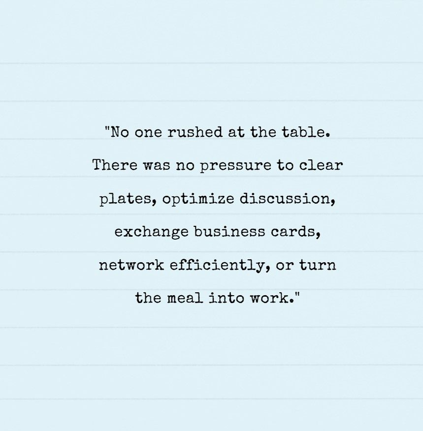
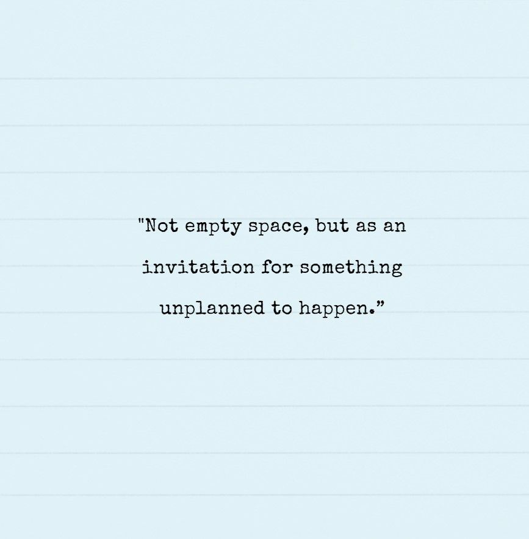
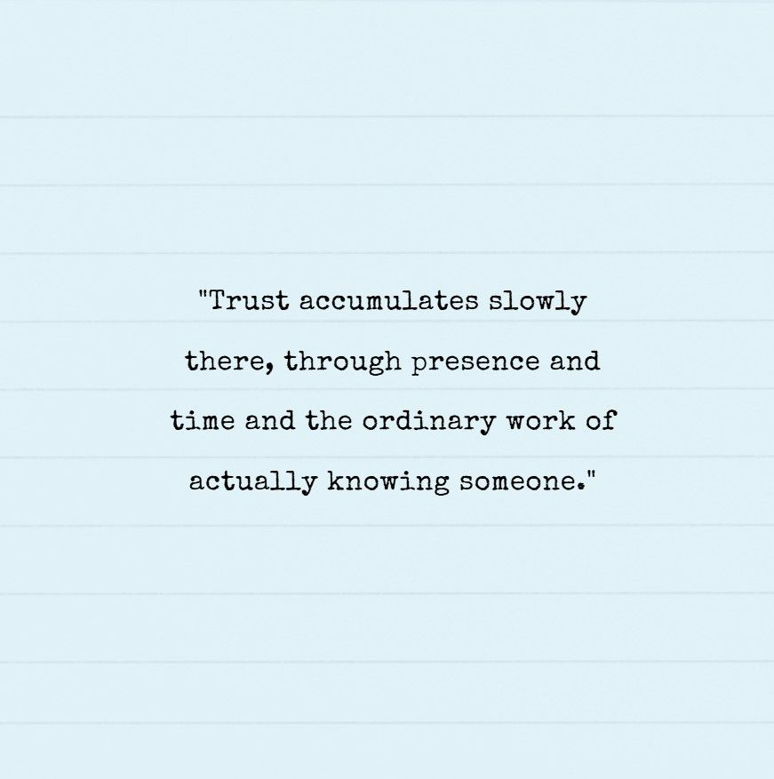
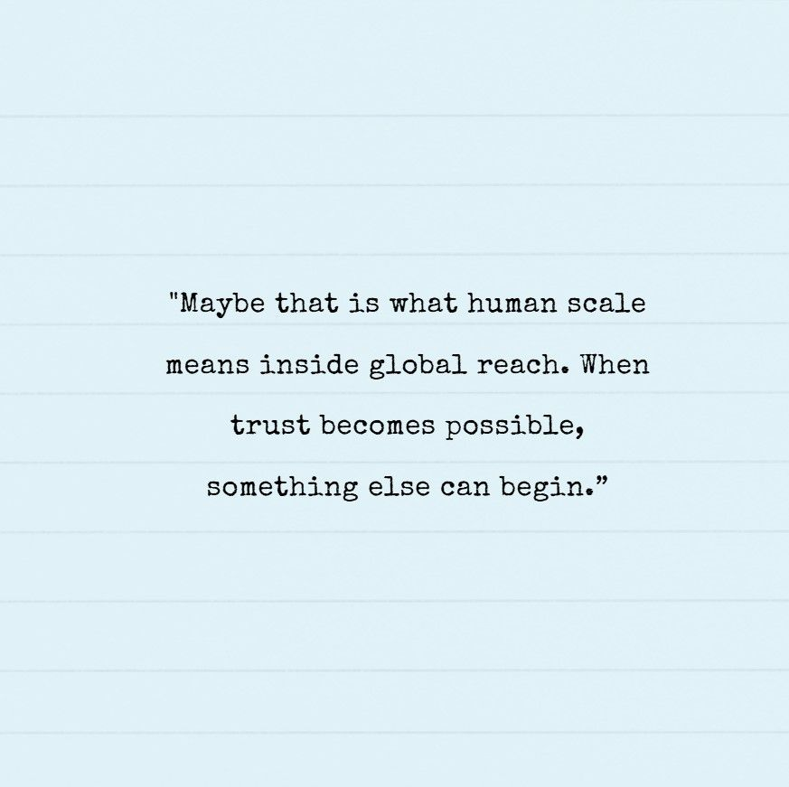

Journey 06 · Firenze Note 8 of 11 Field Note
A Global City at Human Scale
A field note on wandering, meals, and why real influence begins with people who have time to know each other.
The first night of the Women Lead conference, a group of us decided on dinner together. Some women had already peeled off, wine bars calling, sightseeing unfinished, but enough of us wanted to eat that we wandered into the streets of Florence looking for a table.

We were not the kind of group a small European restaurant plans for: We were too many, too loud, too American in our uncertainty about what time dinner was supposed to happen. But we wandered, and we found a place that could take us all, and we sat down.
The wine came first. Then bread was ordered but never came. Then laughter that seemed to belong to no single dinner conversation and everyone at once.
Dinner came slowly after that, dishes appearing in no particular order aside from what the kitchen prepared first. No one rushed the table. There was no pressure to clear plates, optimize discussion, exchange business cards, network efficiently, or turn the meal into work. We were just there, eating, talking, being in Italy.
People began to drift away naturally, a few at a time. Someone had a wine bar in mind. Someone else wanted to walk to the Ponte Vecchio. No goodbyes that required explanation, just a pull toward the next thing, and the understanding that leaving was okay because the evening was not structured around keeping everyone together.
I left with some new friends. We kept talking about big things and small: the work we were trying to do, the doubts we carried, the surprising musical performance along our shared path, the ways we were trying to lead differently, the beauty of the city at night. We gave confidence to each other the way you can only do when you have spent hours sitting at a table together and something real has formed. We got gelato and walked slowly through the city.
And even once it was just me, walking the last few blocks to my hostel alone, I felt content. Happy. Like something had happened that could not have been scheduled or structured or predicted, a thing that could only emerge if there was enough time and enough space and enough refusal to optimize the moment into something useful.
I kept thinking about that afterward because most conferences do not leave much room for that kind of evening.
Conferences are usually built around efficiency: workshops scheduled back-to-back, speakers at podiums, dense days with hard timelines, networking broken into blocks, coffee breaks precisely timed. Meals become fuel instead of gathering. Everything is arranged to fit more in, move faster, and extract maximum value from limited time.

The Women Lead conference was built differently.
Yes, there was structure, but it was structure with breathing room. Sessions had time to go deeper instead of skimming surfaces. Meals were long enough for actual conversation. There were gaps in the schedule, not as empty space, but as an invitation for something unplanned to happen.
Florence gave that rhythm the perfect setting.
The city resists being rushed, at least in the parts of it I loved most. A narrow street. A colorful doorway. An inviting table. A conversation that takes longer than you planned. A church step where you stop because the light is hitting the stone in a particular way. A meal that tastes too good to become merely functional. A person who knows a person who can help you, but first you have to sit down and talk about something else entirely.
Trust accumulates slowly there, through presence and time and the ordinary work of actually knowing someone.
Over and over during those days, I felt how much of Florence seemed to function through relationship. Not the polished version of relationship that gets turned into networking language, but the ordinary kind: the part of daily life that makes everything else possible.
From my own American frame, that can be hard to explain.

In the United States, we often treat trust as something that arrives quickly through professionalism, credentials, platforms, and shared goals. We introduce ourselves, exchange information, get to the point. There is value in that efficiency. It can make things possible.
But in Florence, trust doesn’t work that way.
It accumulates slowly, through repeated presence. Through meals, introductions, family histories and spending the kind of time that cannot be faked or rushed.
That was the strange thing about Florence: something could feel intensely local and historically enormous at the same time.
A museum visit is also a story about patronage. A hospital is also a story about care. A conversation over dinner is also a way of learning how trust moves through a place. A bicycle is also a story about freedom and community. A street is also a classroom.
Leadership had to come back to people.
Who do you know? Who trusts you? Who taught you how to see? Who made the path safer before you arrived? Who makes the work possible in ways no schedule can capture? Those questions are not small. They are the questions that make scale human.
Florence shaped the world. Its art traveled across continents. Its families’ influence reached across centuries. Its ideas about beauty, power, and culture changed how people learned to see. That is one kind of scale.

And yet the city itself stays small enough to walk, to know people, to build trust slowly around tables.
The Women Lead conference understood this. It gathered women from different countries, contexts, and kinds of leadership. The reach was global, but the gathering itself was built around meals, conversations, and breathing room. It trusted that real influence does not come from optimizing every moment. It comes from creating enough space for actual connection to happen.
Maybe that is what human scale means inside global reach.
When trust becomes possible, something else can begin.
Mentioned in
Originally published at fieldnotesfromabroad.com/2026/05/20/a-global-city-at-human-scale/